Apple
Fir0002/Flagstaffotos
GFDL 1.2 · Original file and attribution
These images illustrate the object labels.
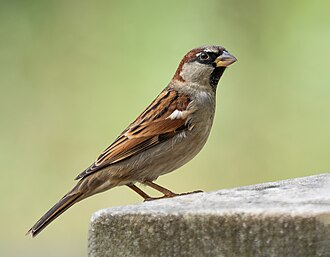
Rhododendrites
CC BY-SA 4.0 · Original file and attribution
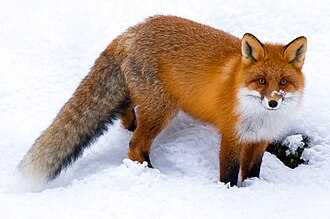
ClaudiaTen
CC BY-SA 4.0 · Original file and attribution
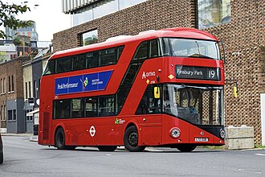
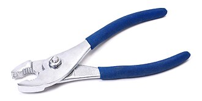
Evan-Amos
Public domain · Original file and attribution
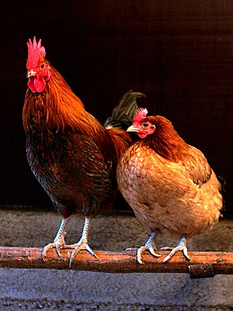
Andrei Niemimäki from Turku, Finland
CC BY-SA 2.0 · Original file and attribution
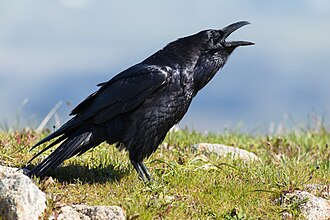
Frank Schulenburg
CC BY-SA 4.0 · Original file and attribution
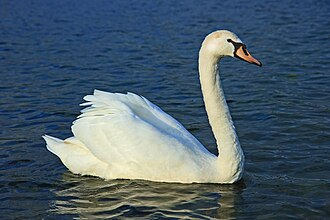
Sanchezn
CC BY-SA 3.0 · Original file and attribution
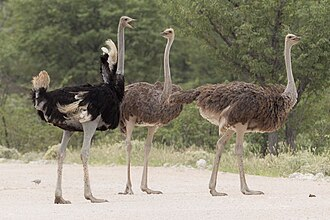
Yathin S Krishnappa
CC BY-SA 4.0 · Original file and attribution
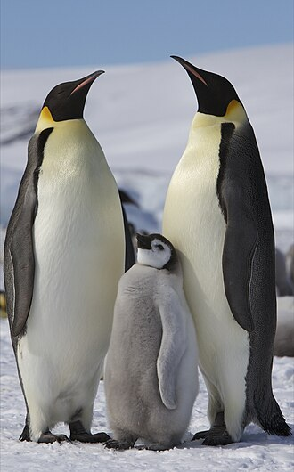
Ian Duffy from UK
CC BY 2.0 · Original file and attribution
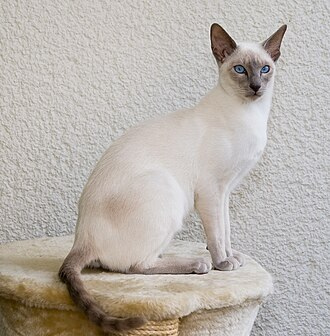
Karin Langner-Bahmann, upload von Martin Bahmann
CC BY-SA 3.0 · Original file and attribution
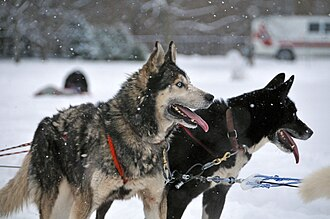
M. Rehemtulla
CC BY 2.0 · Original file and attribution
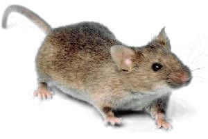
Unknown authorUnknown author (original) / Ilmari Karonen (editing)
Public domain · Original file and attribution
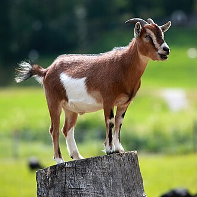
Kuebi = Armin Kübelbeck
CC BY-SA 3.0 · Original file and attribution
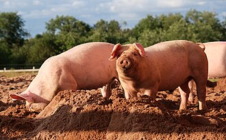
kallerna
CC BY-SA 4.0 · Original file and attribution
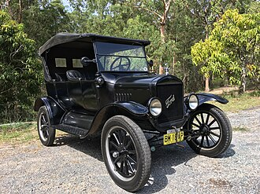
ModelTMitch
Public domain · Original file and attribution
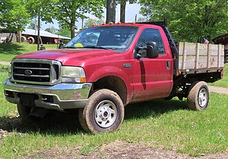
MercurySable99
CC BY-SA 4.0 · Original file and attribution
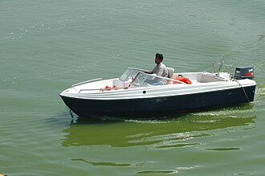
Kondicherry
CC BY-SA 3.0 · Original file and attribution
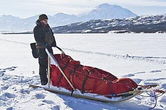
Denali National Park and Preserve
Public domain · Original file and attribution
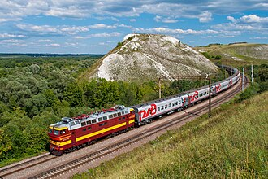
Алексей Задонский
CC BY-SA 4.0 · Original file and attribution
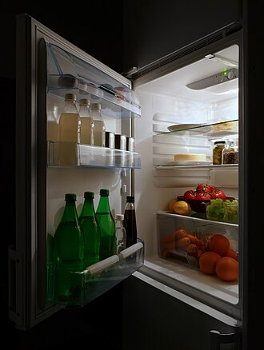
W.carter
CC BY-SA 4.0 · Original file and attribution
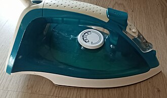
Sokolikmawwer0
CC BY-SA 3.0 · Original file and attribution
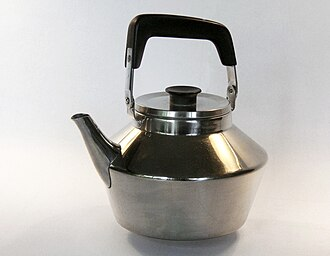
Holger Ellgaard
CC BY-SA 3.0 · Original file and attribution
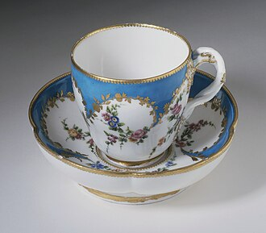
Vincennes Porcelain (France, circa 1739–1756), Francois Binet (France, active 1750-1775, born 1731)
Public domain · Original file and attribution
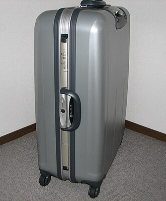
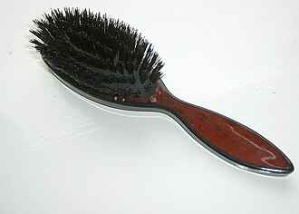
en:User:Musical Linguist
CC BY-SA 3.0 · Original file and attribution
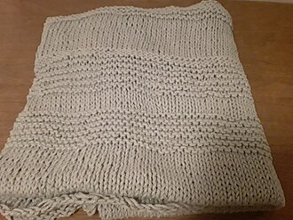
Hannah Clover
CC BY-SA 4.0 · Original file and attribution
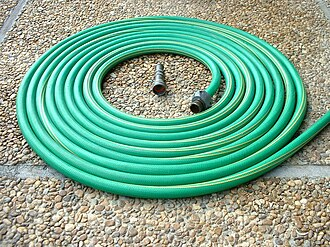
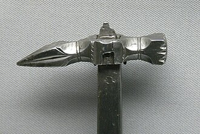
Wolfgang Sauber
CC BY-SA 3.0 · Original file and attribution
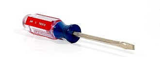
Fcb981 at English Wikipedia
CC BY 2.5 · Original file and attribution
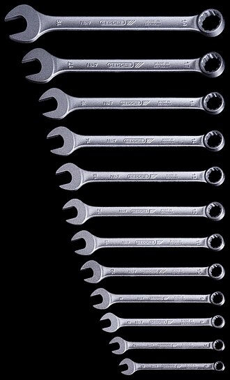
Lucasbosch
CC BY-SA 3.0 · Original file and attribution
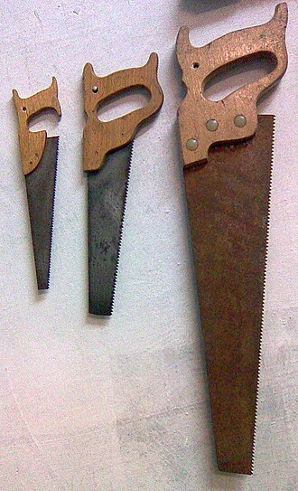
Mnemosine
Public domain · Original file and attribution
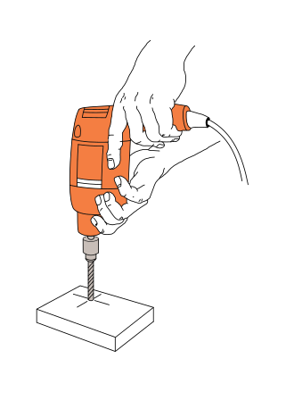
Włodzimierz Wysocki
CC BY-SA 3.0 · Original file and attribution
Fir0002/Flagstaffotos
GFDL 1.2 · Original file and attribution
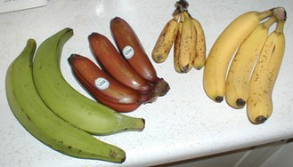
TimothyPilgrim
CC BY-SA 3.0 · Original file and attribution
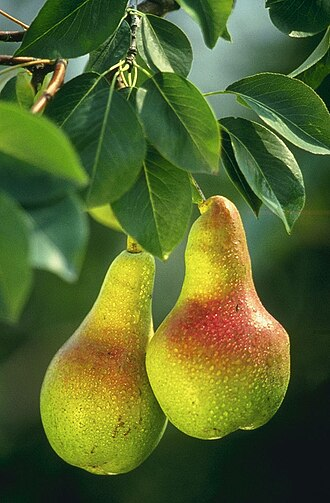
Keith Weller
Public domain · Original file and attribution
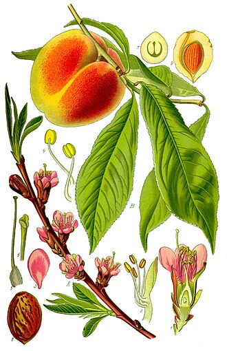
File:Illustration Prunus persica0.jpg: PLEASE COMPLETE AUTHOR INFORMATION
derivative work: Kenraiz
Public domain · Original file and attribution
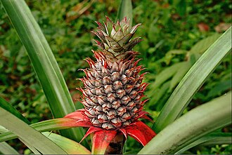
Suniltg at Malayalam Wikipedia
CC BY 3.0 · Original file and attribution
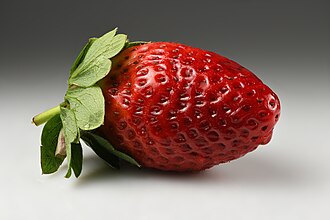
Ivar Leidus
CC BY-SA 4.0 · Original file and attribution
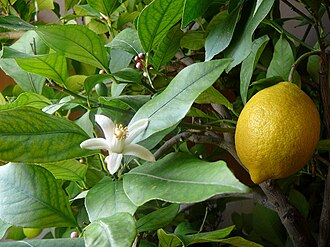
Elena Chochkova
CC BY-SA 4.0 · Original file and attribution
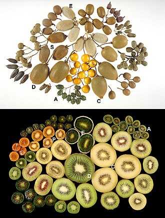
Crowhurst et al.
CC BY-SA 3.0 · Original file and attribution